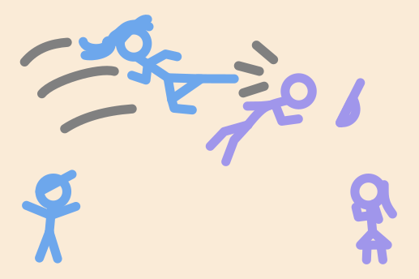

active vs passive — when to use each

My sister beat that guy!
My brother was beaten by that girl!
use active voice when…
the doer is important
or is the focus of the sentence
the sentence is clearer or shorter
in active form
writing in a
direct, personal style
— most everyday speech
use passive voice when…
the
receiver, action or result
is more important than the doer
the doer is
unknown, obvious, or unimportant
writing in a
formal, scientific, or news
style
Compare the same idea in both voices:
active
Someone
broke
the window last night.
We don't know who broke it — awkward with "someone"
passive
The window
was broken
last night.
Natural — the doer is unknown, so we drop it
active
Researchers
found
a locked door.
Fine if the researchers matter to the story
passive
A locked door
was found
behind the bookshelf.
Better — the discovery is the interesting part, not who found it
active
Shakespeare
wrote
Hamlet.
The doer (Shakespeare) is the important, famous part
passive
Hamlet
was written
by Shakespeare.
Also correct — used when Hamlet is already the topic
Tip: if you can finish the sentence with "…but I don't know who" and it sounds natural, passive voice is probably the better choice.
formation
subject
+
be
+
past participle
The form of
be
changes with the tense. The past participle stays the same.
present simple passive
am / is / are + past participle
used for facts, routines, and general truths
affirmative
English
is
spoken
all over the world.
These cars
are
made
in Japan.
negative
This door
is
not
used
anymore.
Phones
aren't
allowed
in the exam room.
past simple passive
was / were + past participle
used for completed actions in the past
affirmative
The house
was
built
in 1920.
The photos
were
found
in the basement.
negative
The letter
wasn't
sent
on time.
The windows
weren't
cleaned
last week.
present perfect passive
have / has been + past participle
used for past actions with a present result, or unfinished time
affirmative
The mystery
has
been
solved
.
Three new species
have
been
discovered
this year.
negative
The case
hasn't
been
closed
yet.
The documents
haven't
been
signed
.
summary
tense
affirmative
negative
present simple
It
is made
here.
It
isn't made
here.
past simple
It
was made
here.
It
wasn't made
here.
present perfect
It
has been made
here.
It
hasn't been made
here.
☀️